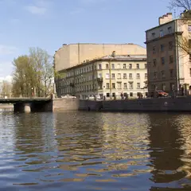

Подборка · данные на 9 ноября
Недорогое свидание в Петербурге
34 плана, где каждая остановка обходится примерно до 1 500 ₽ на человека, а часть и вовсе бесплатна: парки, набережные, смотровые площадки. Ниже — ещё 93 места для свидания с таким же чеком. Цены — ориентир: меню и билеты лучше проверить перед выходом.
- 34 плана
- 93 места
Планы до 1 500 ₽ на человека 24 из 34
- Музей «Аптека доктора Пеля» · Историческая аптека-музей · м. Василеостровская
- 24 минуты пешкомСтанция метро «Горный институт» · Новая станция метро
Склянки и шкафы старой аптеки на 7-й линии, потом новая станция «Горный институт» со светильниками-кристаллами.
Открыть план: Аптека Пеля и станция-кристаллПозвать сюда: Аптека Пеля и станция-кристалл
Фото: Florstein, CC BY-SA 4.0 · Wikimedia Commons
- Дворцовая площадь · Площадь · м. Адмиралтейская
- 4 минуты пешкомПышки на Большой Морской · Пышечная
Вечерняя прогулка по Дворцовой площади, а через три минуты — пышки, которые продают до 23:00.
Открыть план: Дворцовая и пышкиПозвать сюда: Дворцовая и пышки
Фото: Godot13, CC BY-SA 4.0 · Wikimedia Commons
- Masters Bookstore · Книжный об искусстве и дизайне · м. Чкаловская
- 23 минуты пешкомКаменный остров · Остров дач и особняков
Альбомы и кофе в Masters на Барочной, потом тихие аллеи и деревянные дачи Каменного острова.
Открыть план: Книжный об искусстве и Каменный островПозвать сюда: Книжный об искусстве и Каменный остров
Фото: Alexey Komarov, CC BY 3.0 · Wikimedia Commons
- Ледокол «Красин» · Музей-корабль · м. Горный институт
- 13 минут пешкомМонастырские пышки · Пышечная
Осмотреть ледокол «Красин» у набережной, а через десять минут вдоль Невы согреться пышками и кофе.
Открыть план: Ледокол и пышкиПозвать сюда: Ледокол и пышки
Фото: Andrey Korchagin, CC BY-SA 2.0 · Wikimedia Commons
- Дом Лидваля · Доходный дом, северный модерн · м. Горьковская
- 19 минут пешкомДом с башнями · Доходный дом-«замок»
- 10 минут пешкомМузей петербургского авангарда (Дом Матюшина) · Дом-музей
Совы и пауки дома Лидваля, замок с башнями на площади Толстого и деревянный дом Матюшина среди камня.
Открыть план: Модерн ПетроградкиПозвать сюда: Модерн Петроградки
Фото: Wolfgang Moroder, CC BY-SA 3.0 · Wikimedia Commons
- Парадная с ротондой (дом Яковлева) · Парадная с ротондой · м. Сенная площадь
- 6 минут пешкомПышечная на Садовой · Пышечная
Заглянуть в парадную с ротондой на Гороховой, а через пять минут пешком согреться пышками у Апраксина двора.
Открыть план: Ротонда и пышкиПозвать сюда: Ротонда и пышки
Фото: Artyom Svetlov, CC BY-SA 4.0 · Wikimedia Commons
- Парадная с ротондой (дом Яковлева) · Парадная с ротондой · м. Сенная площадь
- 9 минут пешкомДом Флоу · Кофейня в особняке модерн
Круглая лестница с колоннами до купола, потом кофе на пяти этажах особняка с оранжереей на Садовой.
Открыть план: Ротонда на Гороховой и кофе в доме модернПозвать сюда: Ротонда на Гороховой и кофе в доме модерн
Фото: Artyom Svetlov, CC BY-SA 4.0 · Wikimedia Commons
- Музей-фотосалон Карла Буллы · Старинное фотоателье · м. Гостиный двор
- 2 минуты пешкомПышки из детства · Пышечная
Сначала старинное фотоателье на Невском, потом в двух минутах пешком — пышки с кофе, чтобы обсудить увиденное.
Открыть план: Старые снимки и пышкиПозвать сюда: Старые снимки и пышки
Фото: Karl Bulla, общественное достояние · Wikimedia Commons
- Café Alto · Кафе-кофейня · м. Гостиный двор
- 4 минуты пешкомМузей-фотосалон Карла Буллы · Старинное фотоателье
Кофе среди винтажной мебели в Café Alto, потом старинное фотоателье Буллы, где можно сняться в декорациях.
Открыть план: Фотоателье Буллы и кофе на КараваннойПозвать сюда: Фотоателье Буллы и кофе на Караванной
Фото: Karl Bulla, общественное достояние · Wikimedia Commons
- Юсуповский сад · Сад · м. Садовая
- 5 минут пешкомПышечка · Пышечная
Прогулка по Юсуповскому саду, а через пять минут — пакет пышек и прогулка вдоль канала Грибоедова.
Открыть план: Юсуповский сад и пышкиПозвать сюда: Юсуповский сад и пышки
Фото: A.Z.Anisimov, CC BY-SA 4.0 · Wikimedia Commons
- Музей Набокова · Музей · м. Адмиралтейская
- 1 минута пешкомTeplo · Кафе
Коллекция бабочек в родовом особняке писателя на Большой Морской, а через дорогу — кафе-квартира с диванами и пледами.
Открыть план: Бабочки Набокова и кафе-квартираПозвать сюда: Бабочки Набокова и кафе-квартира
Фото: Vadim Zhivotovsky, CC BY 3.0 · Wikimedia Commons
- Манеж · Выставочный зал · м. Адмиралтейская
- 4 минуты пешкомTeplo · Кафе
Самая громкая выставка сезона в огромном зале у Исаакия, а потом 4 минуты пешком — уютное кафе с пледами, чтобы согреться и обсудить увиденное.
Открыть план: Выставка в Манеже и пледы в TeploПозвать сюда: Выставка в Манеже и пледы в Teplo
Фото: SERGiK73, CC BY-SA 3.0 · Wikimedia Commons
- Музей-квартира Пушкина · Музей · м. Адмиралтейская
- 3 минуты пешкомЧАО Какао · Какаочная
Кабинет и библиотека поэта у Конюшенной, а потом пара минут пешком — какаочная, где наливают густой горячий шоколад из окошка.
Открыть план: Квартира Пушкина и горячий шоколадПозвать сюда: Квартира Пушкина и горячий шоколад
Фото: Alexander Ardatov, CC BY 3.0 · Wikimedia Commons
- Кронштадт: Якорная площадь и Морской собор · Прогулочный район · м. Беговая
- дальше на метро или таксиОстров фортов · Парк
Морской собор и тихие улицы города-крепости, а потом — Остров фортов: маяк, аллея флота и форты на горизонте. Между точками — на автобусе или такси.
Открыть план: Кронштадт: собор и фортыПозвать сюда: Кронштадт: собор и форты
Фото: Валера37526, CC BY-SA 4.0 · Wikimedia Commons
- Музей-квартира Куинджи · Музей · м. Спортивная
- 6 минут пешкомБиография · Кофейня
Квартира художника с видом на Неву и выход на крышу его мастерской, а потом 6 минут пешком — кофейня, где любят эксперименты с фильтром.
Открыть план: Крыша Куинджи и кофе на ВасильевскомПозвать сюда: Крыша Куинджи и кофе на Васильевском
Фото: Andris Malygin, CC BY 3.0 · Wikimedia Commons
- Mntn coffee · Кофейня · м. Горный институт
- 2 минуты пешкомСевкабель Порт · Креативное пространство
Берёте кофе в порту и выходите к заливу: бывший кабельный завод, выставки, а главное — закат прямо над водой.
Открыть план: Латте и закат на СевкабелеПозвать сюда: Латте и закат на Севкабеле
Фото: Priana686, CC BY-SA 4.0 · Wikimedia Commons
- Лахта Центр: обзорная площадка и набережная · Смотровая площадка · м. Беговая
- 24 минуты пешкомПарк 300-летия Санкт-Петербурга · Парк
Панорама города и залива с самого высокого небоскрёба Европы, а потом прогулка по молу парка 300-летия — солнце садится прямо в воду.
Открыть план: Лахта: 83-й этаж и закат над заливомПозвать сюда: Лахта: 83-й этаж и закат над заливом
Фото: TomPlay148, CC BY-SA 3.0 · Wikimedia Commons
- Нижний парк Петергофа · Парк · ж/д Новый Петергоф
- дальше на метро или таксиПарк Александрия · Парк
Большой каскад и аллеи Нижнего парка до залива, а потом полчаса пешком вдоль воды (или пара минут на такси) — соседняя Александрия: готическая капелла и пустые тропинки.
Открыть план: Петергоф: каскады и АлександрияПозвать сюда: Петергоф: каскады и Александрия
Фото: Клеткин, CC BY-SA 3.0 · Wikimedia Commons
- Дворцовая набережная · Набережная · м. Адмиралтейская
- 6 минут пешкомDaiquiri · Коктейльный бар
Ночная Дворцовая набережная: ждёте, когда поднимут Дворцовый мост, а потом греетесь в баре у Невского — десятки вариаций дайкири до четырёх утра. Мосты разводят до конца ноября.
Открыть план: Разводка Дворцового и ромовые коктейлиПозвать сюда: Разводка Дворцового и ромовые коктейли
Фото: A.Savin, CC BY-SA 3.0 · Wikimedia Commons

- Коломна и Семимостье · Прогулочный район · м. Технологический институт
- 13 минут пешкомРид · Кофейня
Тихий старый квартал у Никольского собора: с одной точки у Пикалова моста видно семь мостов. Потом 13 минут пешком — кофейня с тысячей пятёрок.
Открыть план: Семь мостов Коломны и кофейняПозвать сюда: Семь мостов Коломны и кофейня
Фото: Lite, CC BY-SA 3.0 · Wikimedia Commons
- Таврический сад · Сад · м. Чернышевская
- 18 минут пешкомПенка · Кофейня
Пруды с мостиками и холмы любимого сада жителей центра, а потом 18 минут пешком — кофейня у Чернышевской с вишнёвым пирогом и вечерними кинопоказами.
Открыть план: Таврический сад и кофе с пирогомПозвать сюда: Таврический сад и кофе с пирогом
Фото здания: Bestalex, CC BY-SA 4.0 · Wikimedia Commons
- Екатерининский парк · Парк · ж/д Царское Село
- 10 минут пешкомАлександровский парк (Пушкин) · Парк
Камеронова галерея и Большой пруд Екатерининского парка, а потом — тихий соседний Александровский с Китайской деревней и почти без туристов.
Открыть план: Царское Село: два парка за деньПозвать сюда: Царское Село: два парка за день
Фото: Никонико962, CC BY-SA 4.0 · Wikimedia Commons
- Комаровский берег · Пляж на Финском заливе
Сосны на склоне, валуны в воде и солнце, которое садится прямо в залив. Электричка с Финляндского.
Открыть план: Закат на Комаровском берегуПозвать сюда: Закат на Комаровском берегу
Фото: GAlexandrova, CC BY-SA 4.0 · Wikimedia Commons
- Музей «Аптека доктора Пеля» · Историческая аптека-музей · м. Василеостровская
- 5 минут пешкомПышки на Ваське · Пышечная
Таинственная старая аптека-музей, а в четырёх минутах по линиям — пышки с кофе.
Открыть план: Аптека Пеля и пышкиПозвать сюда: Аптека Пеля и пышки


Недорогие места для свидания 24 из 93
Дворцовая площадь, 6-8
Новое
Импрессионисты, Матисс и Пикассо в светлых анфиладах под стеклянными крышами, плюс большие сменные выставки.
Подробнее и маршрут: Главный штаб ЭрмитажаПозвать сюда: Главный штаб Эрмитажа
Фото: Max A. Khlopov, CC BY-SA 3.0 · Wikimedia Commons
ул. Профессора Попова, 2П
Новое
Старейший ботанический сад страны: дендрарий, японский сад и оранжереи с тропиками; осенью сюда приходят любоваться клёнами.
Подробнее и маршрут: Ботанический сад Петра ВеликогоПозвать сюда: Ботанический сад Петра Великого
Фото: Afanasovich, CC BY 4.0 · Wikimedia Commons
ул. Некрасова, 23
Новое
Уютный независимый книжный на Некрасова с кафе и мансардой, где легко засидеться с какао и книгой; есть и полка комиксов.
Подробнее и маршрут: Все свободныПозвать сюда: Все свободны
Фото: ELindas, CC BY-SA 4.0 · Wikimedia Commons
Дворцовая пл.
Новое
Главная площадь города: Зимний дворец, арка Главного штаба и Александровская колонна; вечерняя подсветка — отдельное удовольствие.
Подробнее и маршрут: Дворцовая площадьПозвать сюда: Дворцовая площадь
Фото: Godot13, CC BY-SA 4.0 · Wikimedia Commons
Каменноостровский пр., 35 (площадь Льва Толстого)
Новое
Две шестигранные башни Белогруда в духе английского замка держат всю площадь; на одной — циферблат со знаками зодиака. Силуэт эффектен в сумерках.
Подробнее и маршрут: Дом с башнямиПозвать сюда: Дом с башнями
Фото: Grigorius m, CC BY-SA 4.0 · Wikimedia Commons
Елагин остров, 4Т
Новое
Остров-парк без машин: пруды, белки, дворец и Стрелка, где провожают солнце над заливом. Осенью — одно из лучших мест города.
Подробнее и маршрут: Елагин островПозвать сюда: Елагин остров
Фото: Александровы АГ, CC BY-SA 4.0 · Wikimedia Commons
Высотная ул., 1
Новое
Панорама города и залива с 83-го этажа самого высокого небоскрёба Европы, а внизу — набережная для прогулки. Билеты разбирают быстро.
Подробнее и маршрут: Лахта Центр: обзорная площадка и набережнаяПозвать сюда: Лахта Центр: обзорная площадка и набережная
Фото: TomPlay148, CC BY-SA 3.0 · Wikimedia Commons
наб. Лейтенанта Шмидта, 23
Новое
Ледокол 1916 года у набережной: капитанская рубка, машинное отделение и арктическая история.
Подробнее и маршрут: Ледокол «Красин»Позвать сюда: Ледокол «Красин»
Фото: Andrey Korchagin, CC BY-SA 2.0 · Wikimedia Commons
Невский пр., 54
Новое
Интерьеры старинного фотоателье Буллы с небольшой экспозицией о мастере; в декорациях можно сниматься, бывают вечера с концертом. Лучше днём при дневном свете.
Подробнее и маршрут: Музей-фотосалон Карла БуллыПозвать сюда: Музей-фотосалон Карла Буллы
Фото: Karl Bulla, общественное достояние · Wikimedia Commons
Петергоф, Разводная ул., 2
Новое
Каскады, Самсон и аллеи до самого залива — на Петергоф стоит закладывать целый день. Сезон фонтанов уточняйте перед поездкой.
Подробнее и маршрут: Нижний парк ПетергофаПозвать сюда: Нижний парк Петергофа
Фото: Клеткин, CC BY-SA 3.0 · Wikimedia Commons
наб. Адмиралтейского канала, 2
Новое
Остров с выставками, лекциями, кино и маркетами в старых складах; в любое время года есть программа.
Подробнее и маршрут: Новая ГолландияПозвать сюда: Новая Голландия
Фото: Florstein, CC BY-SA 4.0 · Wikimedia Commons
Павловск, Садовая ул., 20
Новое
Огромный пейзажный парк с долинами, мостиками и колоннадой Аполлона; белки здесь почти ручные — возьмите орешки.
Подробнее и маршрут: Павловский паркПозвать сюда: Павловский парк
Фото: Florstein, CC BY-SA 4.0 · Wikimedia Commons
Гороховая ул., 57
Новое
Круглая лестничная клетка с шестью колоннами, уходящими к куполу; стены исписаны пожеланиями гостей. Главный кадр — снизу вверх по оси колонн. Жилой дом: днём пускают за небольшое пожертвование, приходить тихо и небольшой компанией.
Подробнее и маршрут: Парадная с ротондой (дом Яковлева)Позвать сюда: Парадная с ротондой (дом Яковлева)
Фото: Artyom Svetlov, CC BY-SA 4.0 · Wikimedia Commons
Приморский пр., 74
Новое
Молодой парк на берегу залива: длинный мол, вид на Лахта Центр и закаты прямо над водой — особенно хорош вечером.
Подробнее и маршрут: Парк 300-летия Санкт-ПетербургаПозвать сюда: Парк 300-летия Санкт-Петербурга
Фото: Germash19, CC BY-SA 4.0 · Wikimedia Commons
ул. Восстания, 31
Новое
Уютная кофейня у Чернышевской с вишнёвым пирогом и вечерними кинопоказами — спокойный вариант для неспешного свидания.
Подробнее и маршрут: ПенкаПозвать сюда: Пенка
Фото здания: Bestalex, CC BY-SA 4.0 · Wikimedia Commons
Кожевенная линия, 40Б
Новое
Бывший кабельный завод на берегу залива: выставки, концерты, фестивали и закаты у воды.
Подробнее и маршрут: Севкабель ПортПозвать сюда: Севкабель Порт
Фото: Priana686, CC BY-SA 4.0 · Wikimedia Commons
Миллионная ул., 25
Новое
Какаочная в двух шагах от Эрмитажа: густой горячий шоколад и авторское какао из окошка — согреться посреди прогулки.
Подробнее и маршрут: ЧАО КакаоПозвать сюда: ЧАО Какао
Фото здания: Александр Сигачёв, CC BY-SA 4.0 · Wikimedia Commons
Садовая ул., 54
Новое
Пейзажный сад у Сенной с большим прудом и островком; местные коты-старожилы встречают гостей, открыт с утра до позднего вечера.
Подробнее и маршрут: Юсуповский садПозвать сюда: Юсуповский сад
Фото: A.Z.Anisimov, CC BY-SA 4.0 · Wikimedia Commons
Пушкин, Дворцовая ул., 2
Новое
Соседний с Екатерининским, но тише: Китайская деревня, пруды и старые аллеи без толп туристов.
Подробнее и маршрут: Александровский парк (Пушкин)Позвать сюда: Александровский парк (Пушкин)
Фото: Никонико962, CC BY-SA 4.0 · Wikimedia Commons
Адмиралтейский пр.
Новое
Сквер у Адмиралтейства с фонтаном и видом на золотой шпиль — удобная передышка между Дворцовой и Исаакием.
Подробнее и маршрут: Александровский садПозвать сюда: Александровский сад
Фото: Alexander77, CC BY-SA 3.0 · Wikimedia Commons
Кирочная ул., 8
Новое
Лютеранская церковь с выразительными голыми стенами: органные концерты, выставки, перформансы.
Подробнее и маршрут: АнненкирхеПозвать сюда: Анненкирхе
Фото: Екатерина Борисова, CC BY-SA 4.0 · Wikimedia Commons
Дворцовая наб.
Новое
Гранит вдоль Эрмитажа с самым широким видом на Неву, Петропавловку и Стрелку; ночью здесь ждут разводку Дворцового моста.
Подробнее и маршрут: Дворцовая набережнаяПозвать сюда: Дворцовая набережная
Фото: A.Savin, CC BY-SA 3.0 · Wikimedia Commons
Каменноостровский пр., 1–3
Новое
Курдонёр с совой на центральном фронтоне, зайцами, рысью и ящерицей в рельефах и балконными решётками-паутинами с пауками. Детали лучше видны в утреннем свете.
Подробнее и маршрут: Дом ЛидваляПозвать сюда: Дом Лидваля
Фото: Wolfgang Moroder, CC BY-SA 3.0 · Wikimedia Commons
Садовая ул., 21А
Новое
Кофейня на всех пяти этажах модернового дома 1903–1904 годов: лестница модерн, исторические окна, зелень на первом этаже и мини-оранжерея на втором.
Подробнее и маршрут: Дом ФлоуПозвать сюда: Дом Флоу
Фото здания: Артём Светлов, CC BY-SA 4.0 · Wikimedia Commons


Как позвать
- Выбери план, место или событие — в карточке адрес, цены и маршрут в Яндекс Картах.
- Нажми «Позвать сюда» — соберётся приглашение-игра для свидания или голосование для компании.
- Отправь ссылку в любой мессенджер: тебе ответят, а компания отметит, куда и когда может. Бесплатно и без регистрации.